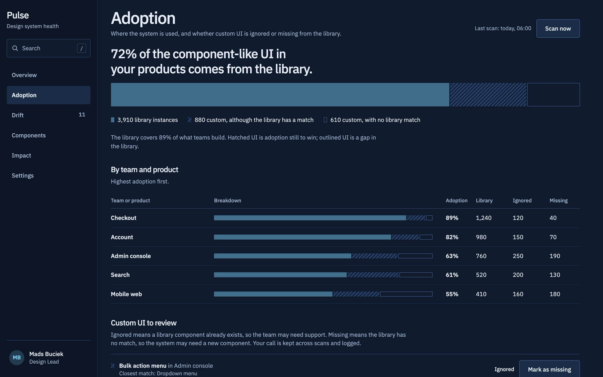
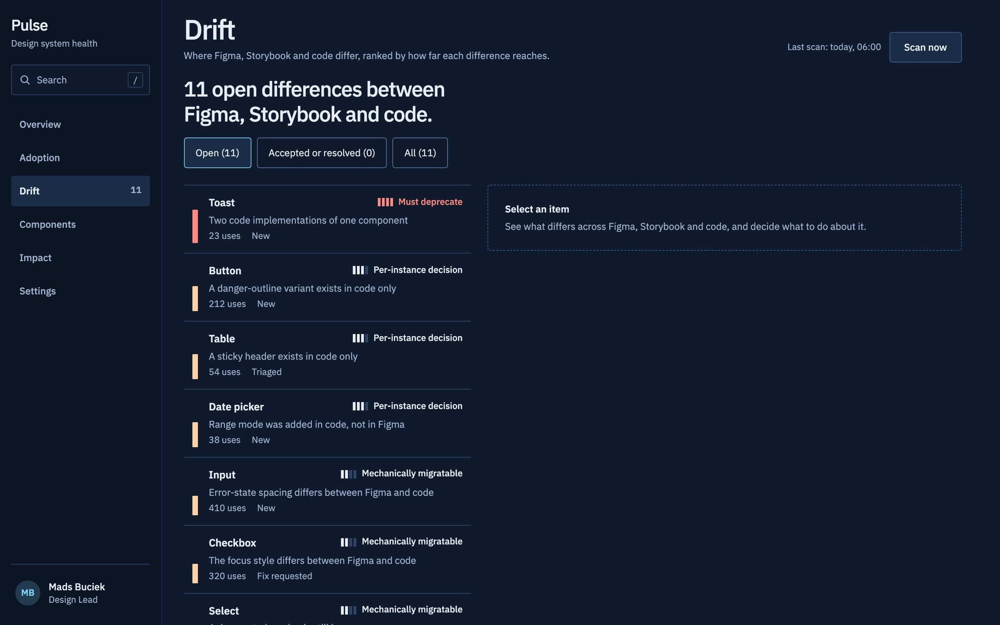
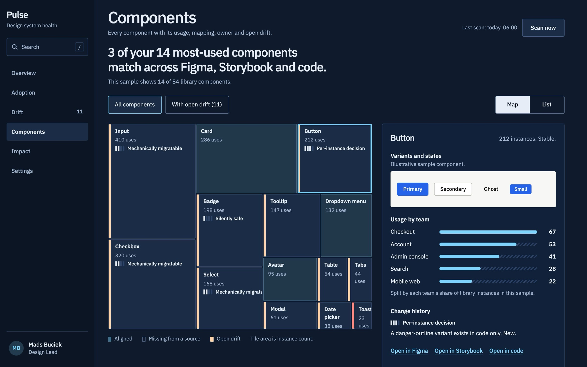
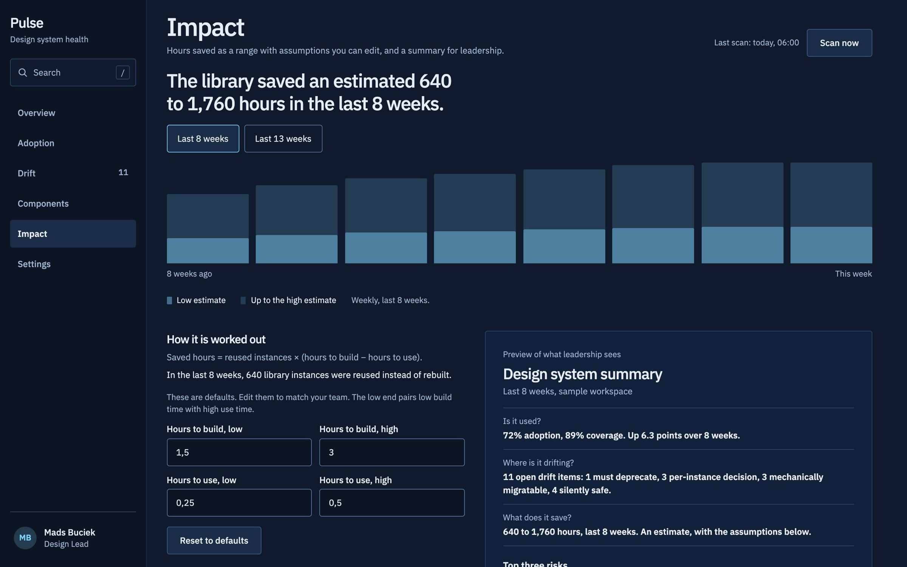
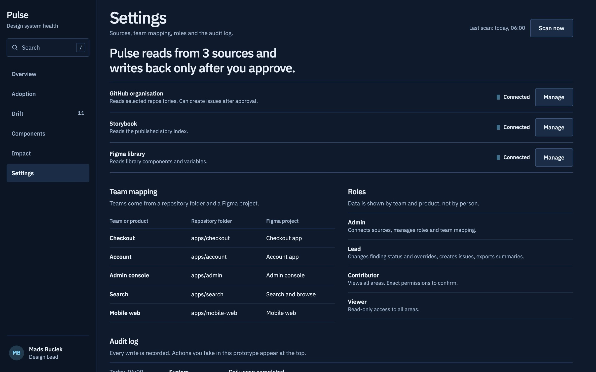

PulseDesign system health
Prove your design system is worth it.
One live view of where the system is used, where Figma, Storybook and code have drifted apart, and what that costs in hours. For the person who has to defend the system to leadership with evidence rather than opinion.
65 of 84 components match across Figma, Storybook and code.

Design systems are trusted, not adopted
Teams that run a design system cannot show where it is used, where it has drifted from the code, or what it saves. Without that evidence they lose funding and mandate, and product teams stop trusting the system. Pulse is a concept for that evidence.
- Role
- Product designer: research, strategy, UX and UI
- Duration
- 6 weeks planned, from discovery to a tested prototype
- Status
- Desk research done. Interviews, survey and concept test are planned, not run.
- Prototype
- Live, with a sample workspace
The system exists. The organisation has not committed to it.
Adoption is invisible
Teams ship UI without anyone knowing which products use which components, or which one-offs duplicate an existing component.
Sources drift apart
Figma, Storybook and production change separately. A screen that no longer matches is easy to spot; a component used in an unintended way needs human judgment.
Value is hard to prove
Few teams measure, and most lack the people to do it by hand.
- 93/56
93% of systems have foundations; only 56% have documented UX patterns.
- 73%
of teams with poor adoption cite a lack of company mandate. 55% cite weak governance.
- 61%
of teams say they lack the people to meet their goals, though 83% have a dedicated team.
- 16%
tracked metrics in Sparkbox’s 2022 survey. Different sample, so read it as direction, not trend.
Sources: zeroheight Design Systems Report 2026 (147 practitioners), as summarised by DesignRush; Sparkbox on drift; Sparkbox survey. Figures as of 10 November 2026.
Built for the design system lead. Read by everyone else.
| User | Job to be done | Pain today | What they need from Pulse |
|---|---|---|---|
| Design system lead | Show leadership the system is worth funding, and keep it healthy | Reports built by hand from several tools, with numbers they do not fully trust | One trusted view, plus a summary to send on |
| Product designer | Build screens without rebuilding what exists | Cannot tell if a component is current, or whether code matches Figma | Clear status per component, and where to ask for a change |
| Frontend engineer | Ship UI without hunting for the right component | Finds Figma and code out of step and rebuilds a one-off | The drift that affects their work, with the fix path |
| Head of design or engineering | Decide where to invest, and whether the system pays back | Hears anecdotes, not evidence | Plain-language impact: adoption, drift, hours saved |
These profiles are hypotheses from desk research and my own experience owning a design system across Figma and code. The planned interviews are there to correct them.
Three sources in. Five views and one action queue out.
Pulse reads Figma, Storybook and the code repositories. The Overview answers the three leadership questions at a glance; the other views explain each answer and turn it into a fix.
- OverviewThe three answers
- AdoptionUsed, ignored or missing
- DriftRanked by reach
- ComponentsUsage and status
- ImpactHours saved, as a range
- SettingsSources and audit log
- Action queueFindings become issues or pull requests, after a person approves
Low usage has two causes, so it gets two labels
Custom UI that duplicates a library component is ignored: the team may need support. Custom UI with no library match is missing: the system may need a new component. They need different fixes, so the view keeps them apart.
The classification is automatic, and the lead can override it. Their call is kept across scans and logged.

Every difference is triaged by how far it reaches
Drift is ranked by reach, then by usage, on a four-level scale adapted from Sparkbox. Pulse surfaces and sorts; it does not auto-fix, because component drift needs a person to judge what a change touches.

- Must deprecateToast: two code versions of one component
- Per-instance decisionButton: a variant that exists in code only
- Mechanically migratableInput: spacing differs between Figma and code
- Silently safeBadge: a difference nobody will notice
Every number traces back to the component behind it
Numbers nobody can trace will not be shown to leadership. So every figure opens onto its source: the map sizes each component by use and marks its drift, and each component links straight to Figma, Storybook and code.

Hours saved as a range, with the assumptions in plain sight
A single number would be punchier, and less credible. Pulse shows a low and a high estimate from assumptions the lead can edit, and turns them into a one-page summary for leadership.
Try it with your own team’s numbers.
How it is worked out
saved = reused instances × (hours to build − hours to use)
The low end pairs low build time with high use time.
The library saved an estimated
640–1,760 hours
in 8 weeks, in the prototype’s sample workspace.

Reads freely. Writes only after you approve.
The lead stays in control of changes to repositories and Figma files. Every write is recorded in an audit log, and data is shown by team and product, never by person.

Six decisions, and what each one costs
| Decision | Why | Trade-off |
|---|---|---|
| Lead with three questions, not a wall of charts | Leads and leaders ask the same three things | Less open exploration on the first screen; drill-downs cover it |
| Every number links to its sources | Untraceable numbers will not reach leadership | A heavier data model and slower views |
| Separate “ignored” from “missing” | They need different fixes | Needs classification logic, so the lead can override it |
| Triage drift by reach; never auto-fix | Component drift needs human judgment | More clicks than automatic fixes, but safer |
| Hours saved as a range with editable assumptions | Avoids false precision, keeps the figure credible | A less punchy headline number |
| Read freely, write only on approval | Keeps the lead in control of repositories and Figma | A slower loop from finding to fix |
What the concept test has to show
These are targets for 5–6 moderated sessions on the prototype, with seeded drift issues. Nothing has been run yet.
| Goal | How I will measure it | Target |
|---|---|---|
| See adoption per team | Time for a lead to name the team with the lowest adoption | Under 30 seconds |
| Find drift before it ships | Share of seeded drift issues found | At least 80% |
| Prove value to leadership | Time to produce a leadership summary | Under 10 minutes |
| Trust the numbers | Participants who would show the figures to leadership | At least 4 of 6 |
| Act on findings | Participants who create a fix from a finding without help | At least 5 of 6 |
The case is only as strong as the research behind it
And the primary research has not happened yet. Adoption is a prerequisite, not proof of value: a team can use every component and still ship poor UI, so Impact pairs adoption with delivery time and drift resolved.
Limitations
- Industry figures come from summaries of the zeroheight report, not the full report.
- Survey respondents likely over-represent mature teams.
- Two of the insights and the user profiles come from my own experience and are untested.
Next steps
- Recruit and run 8–10 interviews with leads, designers, engineers and leaders
- Review zeroheight, Supernova, Knapsack, Omlet, Figma analytics and Storybook
- Update the insights with real quotes, and drop any that fail
- Run the concept test against the targets above
- Pilot with two product teams on real repositories for 4–6 weeks